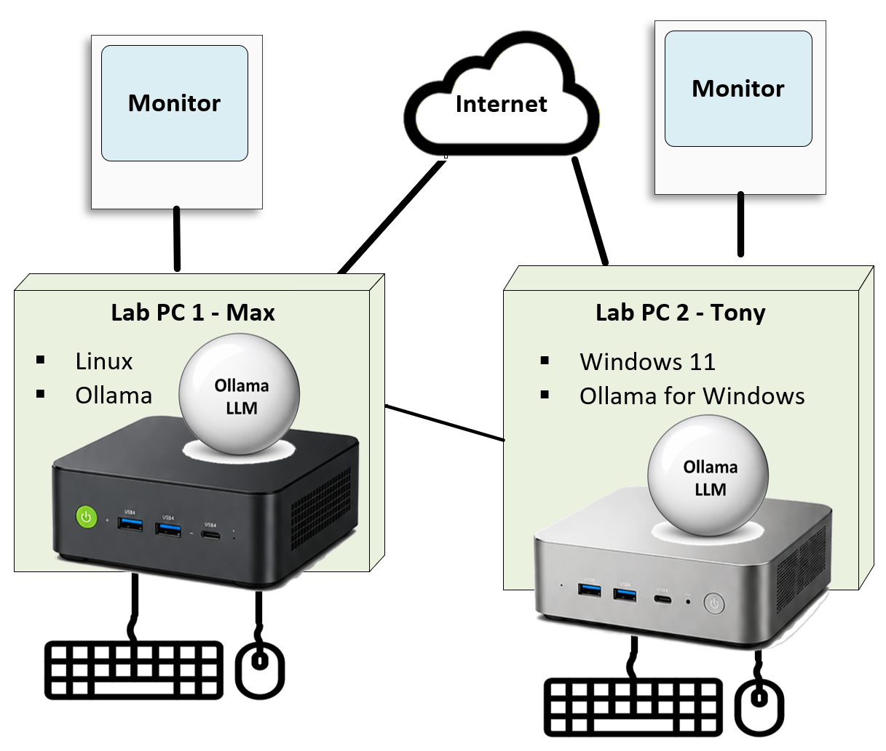
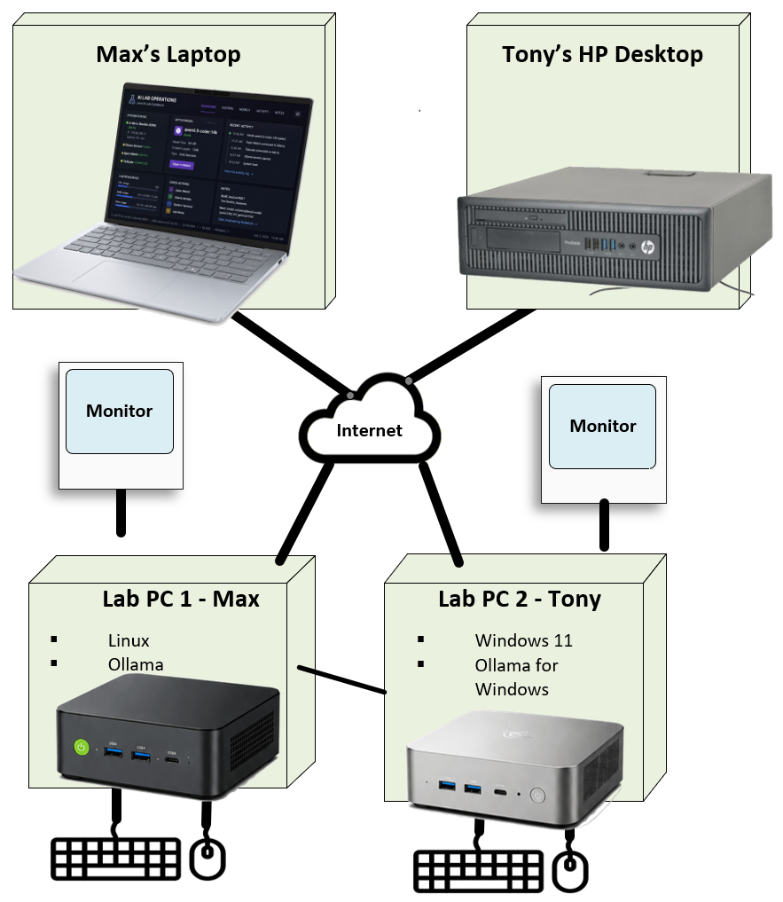

This guide exists because "just run a local LLM" hides a surprising number of moving parts. Each chapter below breaks one piece down — diagram first, plain-English explanation second.
Chapter 1 — The Local AI Stack
Five layers, each depending on the one below it. A request from a person travels down through a front end, a model manager, the model itself, and finally the physical hardware doing the math.
Chapter 2 — Open WebUI: The Front End
A browser-based chat interface. It doesn't run any AI itself — it sends your messages to Ollama and displays what comes back, styled like a familiar chat app.
Chapter 3 — Ollama: The Model Manager and Server
Ollama downloads models (in layers — see Engineering Notebook, Note 004), keeps them on disk, loads them into memory on demand, and exposes a local API that front ends like Open WebUI (or Claude Code, or a custom script) can talk to.
One Ollama instance can manage several models at once, swapping them in and out of memory as different tasks call for them.
Chapter 4 — What Is an LLM?
A Large Language Model is a neural network trained on huge amounts of text to predict, one piece at a time, what comes next. Ask it a question and it's generating its answer token by token, guided by everything it learned during training.
Chapter 5 — Coder Models vs. Conversational Models
Not all LLMs are trained for the same job. Coder models (like Qwen2.5-Coder) are tuned for writing and reasoning about code, and may lean toward structured, tool-call-style output even in casual chat (see Note 005). Conversational models are tuned for natural back-and-forth dialogue instead.
Chapter 6 — The Life of a Prompt
Your text is broken into tokens → sent to the model → the model predicts the next token, then the next, then the next → tokens are streamed back and decoded into readable text. All of this happens locally, on the hardware in the room with you.
Chapter 7 — Hardware: CPU, GPU, RAM, and SSD
CPU and GPU (or NPU) do the math; RAM holds the model while it's running; SSD stores the model files between runs. More RAM and a stronger GPU/NPU let you run bigger, smarter models at usable speed.

Same table shows up on the Hardware page too — it's the answer key for half the questions in this chapter.
See Hardware for the full breakdown of what the lab is actually running on.
Chapter 8 — Model Size and Quantization
Models are described by parameter count (like "14B" = 14 billion parameters) — roughly, bigger means smarter but slower and hungrier for RAM. Quantization shrinks a model's memory footprint (e.g. 4-bit) at a small cost to precision, making larger models usable on modest hardware.
Chapter 9 — Agents: Claude Code, Codex, and OpenCode
Agents sit a layer above plain chat — they can read and write files, run commands, and carry out multi-step tasks rather than just answering questions. Claude Code is the agent building and documenting this very lab.
Chapter 10 — How the AI Lab Fits Together
Put it all together and you get the lab's actual setup: two boxes, two operators, connected over the internet.

Two boxes, one shared network — that's the entire lab today, no data center required.
The interim target adds each operator's everyday computer into the picture too, so the lab can eventually be reached from more than just the dedicated mini PCs:

The "someday" version — same two lab boxes, plus a way in from the everyday computers already on our desks.
See the full write-up on the Architecture page.